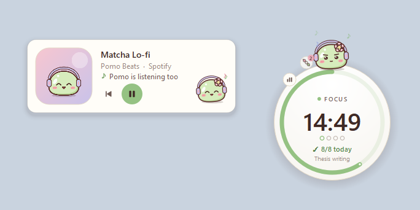
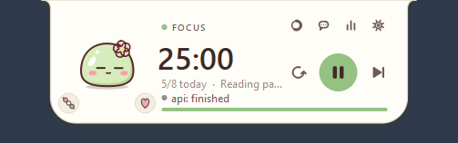
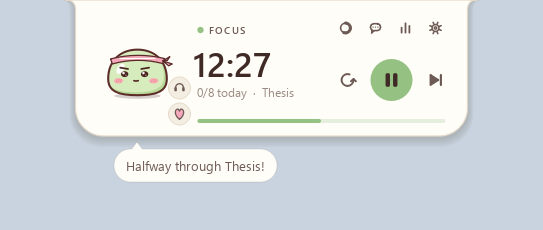
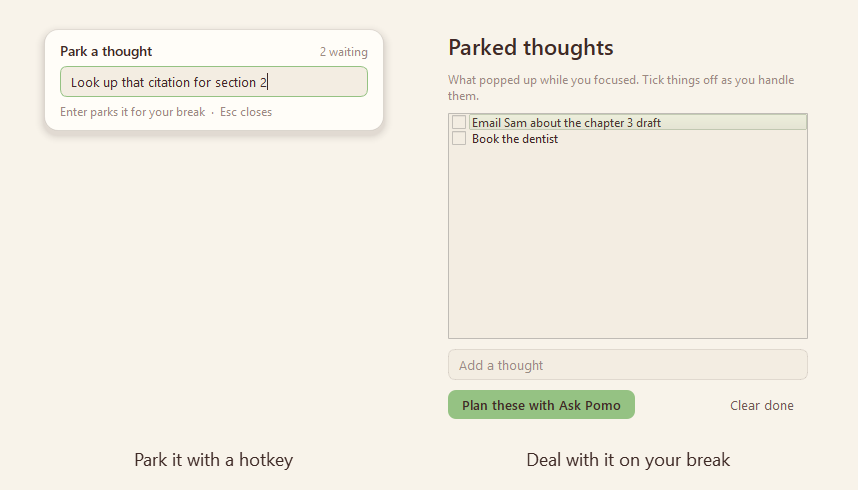
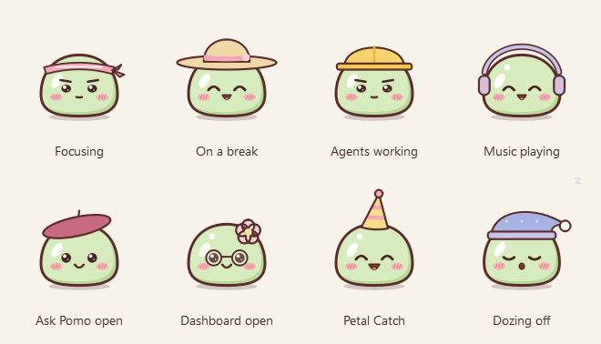
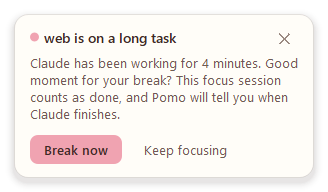
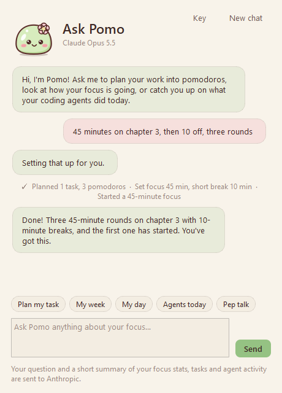
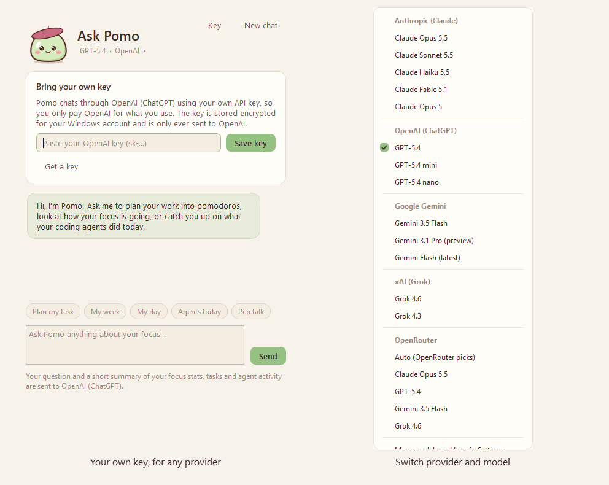

Starring Pomo the matcha mochi. It comes with a focus dashboard, little games, and an eye on your coding agents.
Latest version · Windows 10 or 11 (64-bit) · free · no admin rights needed · all releases

Pomo-Setup.exe, and there is no need to download the source code.Pomo opens as a little island at the top of your screen and says hi. Prefer a round timer you can drag anywhere? Click Switch to orb on the welcome card, or the style button on the timer whenever you like.
Pomo.exe.Pomo-Setup.exe and it removes FocusOrb for you. On its first launch, Pomo brings over your history, settings, saved API key and Claude Code connection. The old %APPDATA%\FocusOrb folder is left in place as a backup.And a few things it didn't know it needed.
A soft matcha mochi who lives on your timer, follows your cursor and reacts to everything.
A slim island at the top of the screen (the default), or a round orb you can drag anywhere. The style button switches between them.
Ask Pomo, the dashboard, the timer style and settings are on the timer itself. No right-click needed.
Double-click the time and type 30, 45:00 or 1:30:00, or scroll over it to add or remove minutes.
Dots show your place in the cycle before the long break, and 3/8 today tracks your daily goal.
A Windows notification, a sound (four built in), a pop-up card with Start break / Skip and a one-tap How was that?, and a soft glow.
Learns your best session length, side-eyes YouTube during focus, parks stray thoughts with a hotkey, and pauses when you step away.
Your task, the window you were in, what your agents did while you were away and your parked thoughts. One click brings that window back.
The project and git branch open in your editor become the session's task, so the dashboard shows focus per project with no typing.
Real rain and café recordings, brown noise and a soft lo-fi loop, on a seamless loop with nothing to download. Pomo puts on headphones too.
Hold a shortcut and ask out loud, and let a soft voice read the replies.
The countdown fills Pomo's taskbar button, with reset, play/pause and skip when you hover it, like a music player.
Take your break while your agent works on a long task, and get agent news on your break instead of mid-focus.
"45 minutes on the thesis, then 10 off, three rounds" sets up the plan and starts the timer.
A short guided break: box breathing, rest your eyes, stretch.
Three small goals a day, like "2 pomodoros before 10 AM", with a badge for each and new outfits now and then.
A sakura tree that grows with every pomodoro and unlocks new outfits.
A cozy room on the dashboard that fills up with furniture you earn from focus hours, quests and Perfect days.
Start, pause, skip, park a thought, play music or talk to Pomo from any app.
Pick your colors and dress Pomo up, or let Pomo dress for what you're doing.
See its exact message, answer Claude's questions, approve requests, and reply when it finishes a turn.
Pet Pomo, feed treats you earn by focusing, and play Petal Catch, Mochi Stack or Memory Match on your break.
See what's playing on Spotify, YouTube or any player, and play, pause or skip from Pomo. Pomo listens along.
KPIs, charts, quests and badges, your room, your agents' activity, a session log and CSV export.
Claude Code, Codex CLI and Gemini CLI: see when one is working, done, or needs you, and review their changes as focus work.
Claude, ChatGPT, Gemini, Grok or anything on OpenRouter, with your own key and your choice of model.
What's next in your plan, agent news held during focus, a new outfit or room item, How was that? with three Pomo faces, and quick chips for Breathe and your parked thoughts.
Runs on startup if you want it to: one switch in Settings > General.

It hangs from the top edge of your screen.

It floats in the bottom-right corner, just above the taskbar. Drag it anywhere. Hover it for the buttons: dashboard, Ask Pomo, timer style and settings along the top, and play, reset and skip below the time.

Pomo also has a button on the Windows taskbar. While a session runs, the countdown fills it (green while it runs, yellow while paused), and its label counts down too. Hover it for a live picture of the timer with reset, play/pause and skip underneath, like a music player. When a coding agent needs you, a small "!" appears on the button. Click it to bring the timer up.
Prefer Pomo in the tray only? Turn off Show Pomo on the taskbar in Settings > General. Close window on the button hides it until Pomo next starts.


Don't want a buddy? Turn off Show Pomo in Settings > Appearance.


Playing music on Spotify, YouTube in your browser, or any app that shows up in Windows' media controls? Pomo shows what's playing and lets you control it without leaving your focus.
Pomo reads what's playing through Windows' own media controls, and nothing leaves your PC. Turn either part off in Settings > General.


No music app needed. Pick one with the headphones button beside Pomo on the island (or on the orb's rim), in Focus sounds in the right-click menu, or in Settings > General:
A sound plays on a loop until you pick Off, with no gap or click where it starts over. Prefer silence on breaks? Turn on Only while I focus. Rain and café come with Pomo and are made into seamless loops on your PC the first time you play them; brown noise and lo-fi are synthesized on your PC. Nothing is downloaded, and the sounds don't touch your system volume.

When a focus session ends, the card asks How was that? with three Pomo faces: tough, okay and great. After a few answers, Pomo compares your session lengths and times of day. When another length clearly suits you better, it suggests switching (at most once a week). A session you stop early counts as a tough one.

Off unless you turn on Notice distracting apps and sites in Settings > Focus. Then, during a focus session, Pomo notices when something on your list (YouTube, Reddit, Netflix and so on) has been in front for 20 seconds. You get a long side-eye and a quiet Psst... YouTube? card. Nothing is blocked, and It's for work takes that one off your list. The dashboard shows your focus score and where your focus time went.
Pomo only looks at which app is in front, plus the site name in a browser's title, never at what's in the window. It keeps app names and minutes on your PC.

If the keyboard and mouse have been still for 5 minutes during a focus session, Pomo pauses it and gives that time back. When you return, choose Resume, or It was focus time if you were reading or thinking. Change the wait, or turn it off, in Settings > Focus.

At halfway, with 5 minutes left and in the last minute, Pomo gives a small hop and says a few warm words (Halfway through Thesis!, 5 minutes to go. Finish strong!) in a bubble beside the timer. It fades after a few seconds, makes no sound, and clicks go straight through it. Short sessions get fewer cheers, and Pomo stays quiet while a card is on screen. Turn it off with During focus in Settings > Focus.

When a break ends, the card tells you where you left off: your task, the window you were working in (say, VS Code · pomo), what your coding agents did while you were away (api finished and changed 4 files, web is waiting for you), your parked thoughts, and a review your agent left you.
Back to VS Code starts your focus session and brings that window back to the front in one click. Start here just starts the session. You get the same card if you skip a break. Turn it off with When a break ends in Settings > Focus.
Start a focus session without a task and Pomo looks at the editor you were just in: the project open there and its git branch. It asks Working on pomo?, and one click names the session pomo (or pomo · fix-login away from the main branch). Always, without asking names them for you from then on.
It works with VS Code and editors built on it (Cursor, Windsurf, VSCodium...), JetBrains IDEs, Visual Studio, Sublime Text, and terminals that show their folder in the title. Window titles stay in memory: Pomo never writes them down.

Something pops into your head mid-focus? Press Ctrl+Alt+Shift+N from any app, type it and press Enter, and you're back to work. Parked thoughts wait for you on the break card and in Parked thoughts in the right-click menu. There you can tick them off, or have Ask Pomo turn them into a plan.

When a break starts, the card offers Breathe. Pomo guides you through about a minute and a half of rest: four rounds of box breathing (in for 4 seconds, hold, out, hold) while Pomo inflates and deflates, 20 seconds to rest your eyes on something far away, and a stretch. It's also in the right-click menu.
During a focus session, Pomo holds its own alerts that can wait, like an agent finishing or waiting for you, and shows them together when your break starts. Permission requests still come through right away. Windows doesn't let apps switch on its own Focus or Do not disturb, so this is Pomo keeping itself quiet; it can't silence other apps.

| Shortcut | Does |
|---|---|
| Ctrl+Alt+Shift+P | Start or pause the timer |
| Ctrl+Alt+Shift+K | Skip to the next session |
| Ctrl+Alt+Shift+N | Park a thought |
| Ctrl+Alt+Shift+M | Play or pause music |
| Ctrl+Alt+Shift+H | Show or hide the timer |
| Ctrl+Alt+Shift+Space (hold) | Talk to Pomo: speak while you hold it, let go to ask |
They work from any app. Change or turn them off in Settings > Shortcuts.
Every finished pomodoro grows a sakura tree on your dashboard. It goes from a sprout to a grand sakura over your first 250 pomodoros, with one blossom for each pomodoro in the range you're viewing. Milestones unlock new outfits for Pomo: cat ears at 10 pomodoros, a flower crown at 25, a graduation cap at 50 and a wizard hat at 100.

Each morning Pomo picks three small quests for the day, from the ones that fit how you use it (no agent quests if you don't use coding agents, no early-bird quest after 9). For example:
| Quest | Goal |
|---|---|
| Early bird | Finish 2 pomodoros before 10 AM |
| Laser focus | Finish a whole session with no pauses or distractions |
| Hat trick | Finish 3 pomodoros in a row, none stopped early |
| Deep dive | Finish a focus session of 45 minutes or more |
| Parking pro | Park 2 stray thoughts instead of chasing them |
| Playtime | Play a mini game on a break |
| Code reviewer | Finish a focus session reviewing your agent's changes |
| Perfect timing | Take a break while a coding agent works |
There are thirteen in all. Each one you finish earns its badge (badges count up when you earn them again), and finishing all three in a day earns Perfect day. Quests also unlock outfits: a star clip at 5 quests, bunny ears at 15 and a strawberry hat at 30. Pomo tells you when you finish one, on your break card if you're mid-session. Today's quests are in the right-click menu, and the dashboard shows them with your badge shelf. Turn them off in Settings > Focus.

Pomo has a room on the dashboard. It starts with a cushion and a rug under a window, and fills up as you go: focus hours, daily quests and Perfect days each earn something new.
| Earned with | Items (and what it takes) |
|---|---|
| Focus hours | Succulent (1), Little desk (3), Wall clock (5), String lights (10), Bookshelf (15), Monstera (25), Sakura curtains (35), Bean bag (50), Floor lamp (70), Study desk (100), Sakura bonsai (150), Cloud sofa (200) |
| Daily quests | Sakura print (3), Heart rug (10), Trophy shelf (20), Fish bowl (40) |
| Perfect days | Starry curtains (3), Sleepy cat (7) |
A new item moves straight in, and the card at the end of your session says so (See room takes you there). Click any spot in the room to swap what's there for something else you've earned, or leave it empty, and click Pomo to poke him. Room items shows what's next to earn and everything so far.
The room keeps time with you. The window goes from sunrise to blue sky to sunset to stars, the string lights and lamps glow in the evening, and Pomo dozes off late at night. The wall clock shows the real time, and the trophy shelf shows your top badges. Open it from the dashboard or with Pomo's room in the right-click menu.


Pick a theme in Settings > Appearance or from the right-click menu: Matcha (the default), Sakura, Lavender, Peach and Mint are light; Cocoa, Blueberry and Plum are dark.

Pomo has twenty-one outfits. Four are earned in the focus garden and three with daily quests. Choose one under Pomo's outfit in Settings > Appearance or in the right-click menu.

A sweatband while you focus, a sun hat on breaks, a hard hat while your agents work, headphones when music plays, a beret in Ask Pomo, glasses on the dashboard, a party hat in Petal Catch and a nightcap when the timer's been idle a while. Your own pick shows the rest of the time. Turn it off in Settings > Appearance to keep one outfit on.

Pomo can watch your Claude Code, Codex CLI and Gemini CLI sessions, so you can stay in your focus session and still know when an agent needs you.
Connect it once: open Settings > Agents and click Connect Claude Code. Pomo adds its hooks to %USERPROFILE%\.claude\settings.json. Your other settings are kept, and a backup is saved next to the file the first time. New Claude Code sessions pick it up.

Connect them the same way, with Connect Codex and Connect Gemini in Settings > Agents.
%USERPROFILE%\.codex\hooks.json. Codex asks you to trust new hooks once: run /hooks in Codex and trust Pomo's. You get live status, approvals in Pomo (Allow, Deny, Deny with a note), changes to review (Codex's patches are counted file by file), and replies when a turn ends.%USERPROFILE%\.gemini\settings.json (needs a Gemini CLI with hooks). Gemini runs every hook in line, so Pomo only listens to what it needs: your prompts, file edits and commands, the end of a turn and its notifications. You get live status, changes to review, a heads-up when it waits for permission in the terminal, and replies when a turn ends.Cards and notifications name the agent (web: Codex finished). As with Claude Code, your other settings are kept, a backup is saved the first time, and Disconnect removes only Pomo's entries. Multiple-choice questions are answered in Pomo for Claude Code only, since only Claude Code lets a hook answer them.
When you're away from your terminal (Pomo checks whether a terminal or code editor is in front), Claude Code's messages come to Pomo, word for word:
At your terminal, nothing waits: Claude Code asks and stops there as usual, and Pomo only shows the news. Turn each part on or off in Settings > Agents.

Agents write code; somebody has to read it. When an agent finishes a turn that changed files, Pomo turns that into focus work for you:
During quiet focus the offer waits for your break card. Turn it off in Settings > Agents. Line counts are estimated from the edits the agent made.


Click the chat button on the timer to chat with Pomo. Pomo knows your timer, your focus stats, your current task and what your agents did today, so you can ask things like:

Say what you want and Pomo sets it up. It can start a focus session or a break, set your current task, line up a plan of tasks (each with a number of pomodoros), and change your session lengths. A line in the chat shows what it did. Your plan is in the right-click menu, and when a focus session ends the card tells you what's next.
The My day chip asks for a short review of your day: what you got done, how your sessions felt, what your agents did, and one thing to carry into tomorrow. From 6 PM (change it in Settings > AI), Pomo offers this once a day. It only asks the AI if you say yes.

There is no subscription: you pay the provider directly for what you use.
| Provider | Models to start with | Key from |
|---|---|---|
| Anthropic (Claude), the default | Claude Opus 5.5, Sonnet 5.5, Haiku 5.5, Fable 5.1, Opus 5 | console.anthropic.com |
| OpenAI (ChatGPT) | GPT-5.4, GPT-5.4 mini, GPT-5.4 nano | platform.openai.com |
| Google Gemini | Gemini 3.5 Flash, Gemini 3.1 Pro (preview), Gemini Flash (latest) | aistudio.google.com |
| xAI (Grok) | Grok 4.6, Grok 4.3 | console.x.ai |
| OpenRouter | Auto, plus hundreds of models from every lab behind one key | openrouter.ai |
In Settings > AI you can also click Load models to see every model your key can use, or type any model ID. Each provider's key is stored encrypted for your Windows account and is only ever sent to that provider. If no key is saved, Pomo uses ANTHROPIC_API_KEY, OPENAI_API_KEY, GEMINI_API_KEY, XAI_API_KEY or OPENROUTER_API_KEY from your environment.
Privacy: nothing is sent until you ask something. Then Pomo sends, to the provider you picked, your question plus a short summary: timer state, focus stats, task names, your plan, parked thoughts, how your sessions felt, your focus score, and agent activity (project names, prompts and tool counts).

| Who hears you | How | Your voice goes to |
|---|---|---|
| This PC | Windows' own speech recognition, offline | Nowhere: it stays on your PC |
| OpenAI | OpenAI's transcription, with your OpenAI key (the most accurate) | OpenAI |
| Gemini | A Gemini model, with your Gemini key | |
| Automatic (the default) | OpenAI or Gemini when Ask Pomo already uses that provider, this PC otherwise | As above |
Replies are read by a Windows voice on your PC (pick one in Settings > AI). Pomo uses Windows' speech engines through Windows PowerShell, so there's nothing extra to install. Windows asks whether desktop apps may use your microphone (Settings > Privacy & security > Microphone); Pomo only listens while you hold the shortcut or the mic.

| Action | How |
|---|---|
| Start / pause | Hover, then click the round play button, or press Space |
| Reset / skip | The buttons next to play, or R / S |
| Edit the time | Double-click the time and type a value. When the timer is idle, whole minutes become the new default for that mode. While it is running, this changes the time left. |
| Nudge the time | Scroll over the timer: 1 min per notch (Shift or Ctrl: 5 min), or Up / Down |
| Dashboard, Ask Pomo, timer style, settings | The small buttons along the top of the timer (hover to see them) |
| Move it | Drag the orb anywhere. The island stays at the top center. |
| Play | Poke, pet or double-click Pomo; click the dango to feed a treat or the petal for the games |
| Music | The now-playing row on the island, or the music badge on the orb: previous, play/pause, next |
| Focus sounds | The headphones button beside Pomo on the island, or on the orb's rim |
| From any app | The global shortcuts: start or pause, skip, park a thought, music, show or hide, talk to Pomo |
| Taskbar | Hover Pomo's taskbar button for reset, play/pause and skip; click it to bring the timer up |
| Everything else | Right-click: switch mode, add time, set task, your plan, park a thought, parked thoughts, daily goal, timer style, theme, outfit, Pomo's room, Ask Pomo, Talk to Pomo, games, Breathe with Pomo, focus sounds, today's quests, music, reviews waiting, coding agents, run on startup, hide, quit |
| Tray icon | Click to bring the timer back; double-click for the dashboard |
Open it with the chart button on the timer, from the right-click menu or by double-clicking the tray icon.

| Tab | What you can change |
|---|---|
| Timer | Focus, short and long break lengths; long break interval; daily goal; auto-start for breaks and for focus |
| Focus | Session ratings and length tips, Pomo cheering you on, away detection, the distraction check-in and its list, quiet focus, the break card, "Where was I?" when a break ends, naming sessions after your project (ask, automatically or off), daily quests |
| Alerts | Notifications, pop-up card, sound, volume, repeats, idle reminder |
| Appearance | Theme, timer style (island or orb), show Pomo, Pomo's outfit, Pomo dressing for what you're doing, tuck the island away when idle, orb size, opacity, fade while focusing, always on top, show task, colors for each mode |
| Agents | Connect or disconnect Claude Code, Codex CLI and Gemini CLI, suggesting reviews of agent changes, answer permission requests in Pomo, how long to wait for your answer, finish notifications, answering Claude's questions, replying when a turn ends (and how long the agent waits), break suggestions for long agent tasks |
| AI | Provider and model for Ask Pomo, your key for each provider (save, check, remove), load your models, when to offer the day review, who hears you when you talk to Pomo, reading replies aloud and the voice |
| Shortcuts | Global shortcuts on or off, and each key combination (including the talk shortcut) |
| General | Run Pomo on startup, updates (on or off, check now, update now), Pomo on the taskbar, focus sounds (which one, volume, only while focusing), music controls, Pomo listening along, music following the timer, move the orb back to its corner, open the data folder, export CSV, clear history |
Your data lives in %APPDATA%\Pomo: settings.json (with your quests, badges, room and reviews waiting), history.db (pomodoros with their ratings, agent activity, parked thoughts and, if the check-in is on, minutes per app), cache\ (the focus sounds once they're made), updates\ (a downloaded update until it's installed) and, if you saved one, ai_key.bin (your API key, encrypted). Window titles (for "Where was I?" and project names) are never written to disk. When you talk to Pomo, the recording and the replies it reads aloud only pass through a temporary file in cache\, deleted as soon as Windows is done with it. To check for updates, Pomo asks GitHub's public API for the latest release every hour; nothing about you is sent with it.
From the project folder, in PowerShell or Command Prompt:
.\run.batThe first run creates a .venv and installs the dependencies (PySide6 and the Anthropic SDK). To try the dashboard with sample history (kept in a separate data folder), run .\run.bat --demo.
Run the tests with python -m unittest discover -s tests -t .
Pomo doesn't see your music? Run python main.py --media-check (or Pomo.exe --media-check | more in an installed copy). It prints the media sessions Windows reports and the song Pomo would show.
Install Inno Setup 6 (winget install JRSoftware.InnoSetup), then run:
.\build.batThis runs the tests, then writes dist\Pomo-Setup.exe (the installer) and dist\Pomo-portable.zip (the portable build).
APP_VERSION in pomodoro/__init__.py and commit.git tag v1.7.0, then git push origin v1.7.0.Pomo-Setup.exe and Pomo-portable.zip and attaches them to the release, with Pomo-Setup.exe.sha256. Installed copies of Pomo find it within an hour, verify the installer against that checksum and offer the one-click update.main.py entry point, single-instance guard, hook mode, FocusOrb data migration
pomodoro/engine.py timer state machine (monotonic clock, cycles, logging)
pomodoro/island.py the top-of-screen island (the default timer style)
pomodoro/orb.py the floating round timer
pomodoro/pomo.py Pomo: drawing, moods, outfits and animation (all in code, no image files)
pomodoro/game.py the games window and Petal Catch
pomodoro/stack.py Mochi Stack
pomodoro/memory.py Memory Match
pomodoro/toast.py pop-up cards (session alerts, welcome, agent approvals)
pomodoro/agents.py live coding-agent sessions and approvals, over a local named pipe
pomodoro/hook.py the hook client the agents run, translating Codex and Gemini into Claude Code's terms
pomodoro/claude_hooks.py connects / disconnects Pomo in Claude Code's settings.json
pomodoro/agent_hooks.py connects / disconnects Pomo in Codex CLI's hooks.json and Gemini CLI's settings.json
pomodoro/reviews.py the agent review queue: changed files turned into focus tasks
pomodoro/workspace.py the window you worked in, and the project and git branch open in your editor
pomodoro/quests.py daily quests, badges and their drawings
pomodoro/cheer.py a few warm words from Pomo during focus, in a bubble that fades
pomodoro/soundscapes.py focus sounds: the recordings made into seamless loops, and brown noise and lo-fi synthesized
pomodoro/sounds/ the rain and café recordings (MP3)
pomodoro/audio.py sound in and out through Windows' waveOut and waveIn (focus sounds, the mic), MP3 decoding
pomodoro/voice.py Talk to Pomo: push-to-talk, speech to text, replies read aloud
pomodoro/taskbar.py the taskbar button: progress, thumbnail buttons and the live preview
pomodoro/updater.py updates from GitHub Releases: check, download, verify, one-click silent install
pomodoro/ai.py Ask Pomo: context, streaming replies and key checks (Anthropic SDK, OpenAI-compatible APIs)
pomodoro/providers.py the AI providers and their models
pomodoro/agent_card.py Claude Code's questions, permission prompts and end-of-turn messages, answered in Pomo
pomodoro/chat.py the Ask Pomo window, with the bring-your-own-key panel
pomodoro/keystore.py API key storage, encrypted with Windows DPAPI
pomodoro/media.py now playing: reads and controls Windows' media sessions (WinRT), on a background thread
pomodoro/pacing.py agent-paced pomodoros: break and focus suggestions, news held during focus
pomodoro/presence.py away detection and the distraction check-in
pomodoro/insights.py best focus length, focus score, agent overlap, songs left
pomodoro/planner.py the task plan and Ask Pomo's tools
pomodoro/thoughts.py the thought parking lot
pomodoro/breathe.py Breathe with Pomo
pomodoro/garden.py the focus garden and outfit unlocks
pomodoro/room.py Pomo's room: the items, what earns them, where they go and how they're drawn
pomodoro/hotkeys.py global shortcuts (Win32 RegisterHotKey)
pomodoro/music_card.py the mini player card, and cover drawing shared with the island
pomodoro/dashboard.py dashboard window
pomodoro/charts.py hand-painted charts (no matplotlib, keeps the build small)
pomodoro/settings_dialog.py settings window
pomodoro/app.py controller: tray, menus, notifications, wiring
pomodoro/config.py settings, outfits and the FocusOrb to Pomo data move
pomodoro/storage.py SQLite history (pomodoros and agent events)
pomodoro/stats.py KPI calculations
pomodoro/sounds.py alert sounds synthesized at runtime
pomodoro/theme.py the eight pastel themes, stylesheet
pomodoro/icons.py button glyphs and the Pomo app icon
pomodoro/winutil.py Windows helpers: run on startup, dark title bars, bringing a window back to the front
installer/Pomo.iss Inno Setup installer script (also removes FocusOrb when upgrading, and runs silent updates)
tools/prepare_build.py generates the .exe icon, installer artwork and version info
tests/ unit testsFree for Windows 10 and 11. Pomo updates itself with one click.